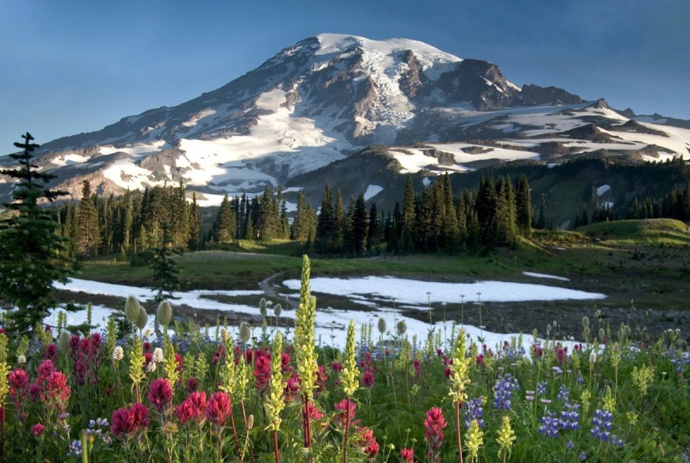
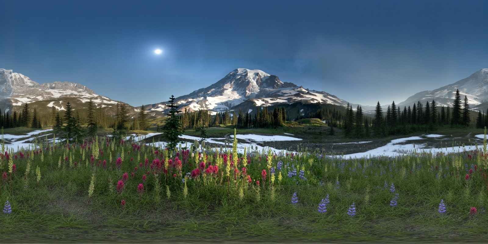
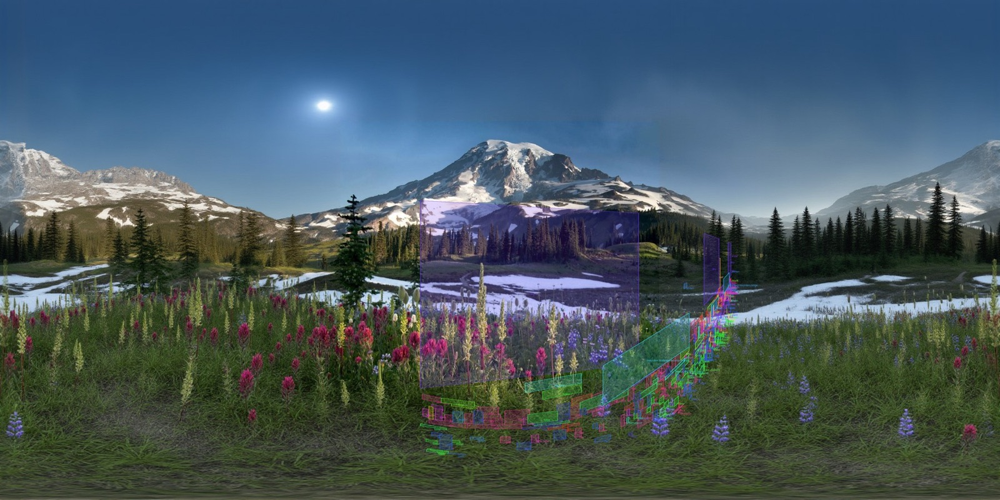
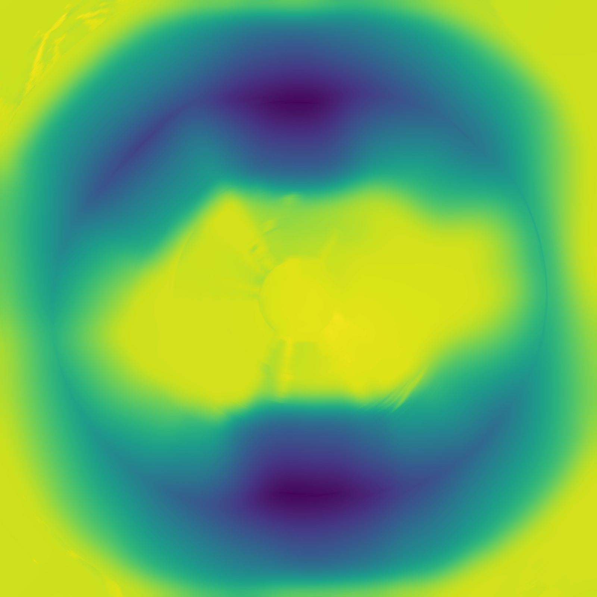
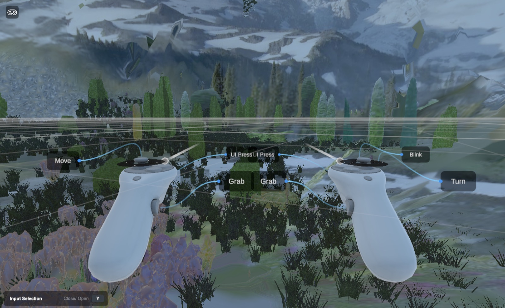
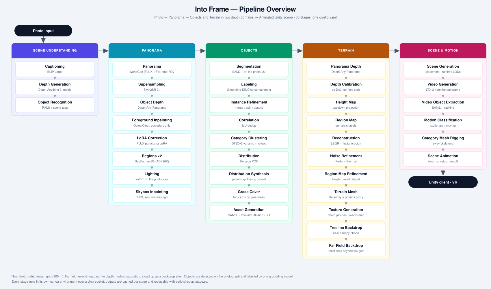
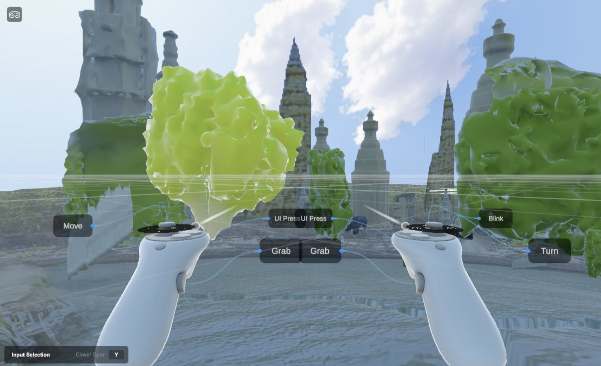
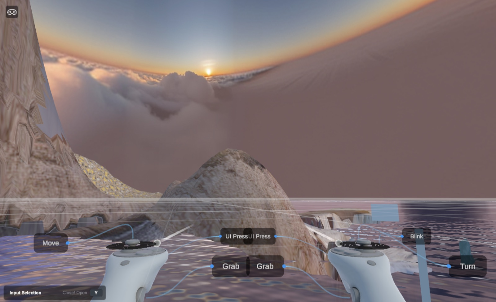
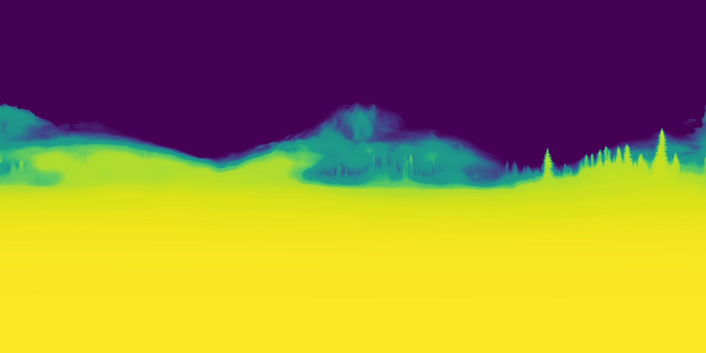
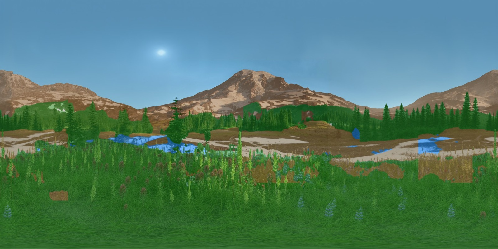

Into Frame
Step inside any image.
Into Frame takes a single photograph and produces an inhabitable 3D environment: terrain you can walk on, objects that exist as individual simulated assets, ground cover that moves in the wind, and lighting estimated from the photo, running in Unity at VR frame rates.


About#
Into Frame explores how generative AI can turn a single photograph into a spatially coherent, inhabitable 3D world: not a viewable but inert result, but a place with discrete objects, moving vegetation and physically based light.
The central design commitment is to reconstruct each part of the scene by a method suited to its physical role rather than extracting everything from one representation. Given one image, the system estimates metric depth with Depth Anything 3 and outpaints a 360° panorama around the photograph with WorldGen. Objects are detected on the photograph itself and labelled by a grounding model; the ground is projected into a top-down height map, reconstructed with erosion where nothing was observed, and textured from the photo's own material. Everything the depth models cannot measure, such as the mountain that is really kilometres away, becomes a separate far-field backdrop. Lighting is estimated from the photograph, and a generated video of the scene drives motion classification and the skeletons that make vegetation sway.
The pipeline is 38 stages, fully YAML-configurable: each stage can be enabled or disabled independently, every model parameter is a top-level option, outputs are cached per stage, and any stage can be replayed against a cached run on its own.
Method#
Five phases, 38 stages, from a flat photograph to an interactive 3D scene.
Phase 1
Scene understanding
A vision-language model captions the photograph, Depth Anything 3 estimates metric depth and camera intrinsics, and RAM++ tags what the scene contains. The tags become the vocabulary every later detector is prompted with, so a meadow is never asked whether it contains a bus.
Phase 2
360° panorama
The photograph is embedded at its true field of view and the rest of the sphere is outpainted by WorldGen. Objects that would stand in the terrain are removed from a copy of the panorama, the sky is completed with the sun placed where the estimated key light is, and a second depth model (Depth Any Panorama) is calibrated against the photo's metric depth.
Phase 3
Objects
SAM2 segments the photograph at twice its resolution; Grounding DINO, prompted with the scene tags, labels each blob by containment. Blobs are clustered into visual variants, their spatial pattern is learned as a pair-correlation function and painted across the matching ground, grass is laid as cards, and each variant is reconstructed with SAM3D from a delit, super-resolved crop.

Phase 4
Terrain in two domains
Ground pixels become a top-down height map that keeps each cell's observed panorama pixel; the unobserved remainder is reconstructed by a harmonic solve with fluvial erosion. The mesh is textured with the photo near the viewer, with real material tiles modulated by the photo's large-scale colour further out. Everything past the depth models' saturation, the distant mountain, is stood up as a separate far-field backdrop shell behind the grid.

Phase 5
Scene, light and motion
Every instance carries its reconstruction, a crossed card and a billboard as runtime LODs. Lighting is estimated from the photograph with LuxDiT and the skybox lights the scene. An LTX-2 video generated from the panorama is tracked per object to classify motion, rig sway skeletons into the vegetation and hand moving objects to Unity's physics.

Pipeline#
Every stage, in order, with the data each one hands to the next. The pipeline is configured in one config.yaml; any stage can be turned off or replayed against a cached run.


Viewer#
Step into the scenes the pipeline built. Each opens where the photograph was taken; drag to look around, walk a few metres with W A S D, and watch the wind, the water and the boats move. With a VR headset, choose Enter VR.
Plates#
Scenes generated from single photographs, and some of the intermediate representations along the way.




Architecture#
Key design decisions that make the system practical to run and extend.
- A near field and a far fieldTwo depth domains
- Monocular depth models saturate at a few tens of metres. The terrain grid keeps only what was measured; everything in the saturated band is a separate backdrop shell at its own scale, rendered unlit like the sky it fronts. A mountain stops being a ring of rock at 30 m.
- Grounding by containmentOne labeling model
- A segmented blob takes the label of the detector box that covers it, with the detector's own score as its confidence, and stays unlabelled otherwise. One model and one threshold replaced a five-model chain of captions, CLIP prompts, fallbacks and verification passes.
- Per-model conda environmentsMulti-process isolation
- Each heavy model runs in its own conda environment as a subprocess, talking to the pipeline over a Unix socket with a line-delimited JSON protocol. Dependency conflicts disappear and GPU memory is released between stages.
- YAML-driven, cached, replayableConfiguration
- The stage sequence and every parameter live in one
config.yaml. Each stage caches its outputs, so a re-run resumes where the work changed, andscripts/replay-stage.pyruns any single stage against a cached run for validation. - One skyLighting
- The key light is estimated from the photograph, the sky is generated with its sun in that direction, and the Unity ambient probe is rendered from that same sky. Objects, terrain and far field are delit by shading only, so their colour is the photograph's.
- Unity, URP, VRClient
- A Unity client streams the scene over WebSocket and HTTP: a splat terrain shader with stochastic tiling and a macro colour map, LOD groups per instance, wind sway on rigged meshes, physics handoff for moving objects, and water.
Model stack
| Role | Model | Used for |
|---|---|---|
| Depth | Depth Anything 3 | Metric monocular depth + intrinsics |
| Panorama | WorldGen | 360° outpainting on FLUX.1 Fill |
| Panorama depth | Depth Any Panorama | Calibrated against the photo |
| Objects | SAM2.1 · Grounding DINO · RAM++ | Segment, label, tag |
| Variants | DINOv2 | Visual clustering of instances |
| Assets | SAM3D · IntrinsicDiffusion · Swin2SR | Reconstruction, delighting, super-resolution |
| Lighting | LuxDiT | HDR environment from the photograph |
| Motion | LTX-2 · SAM2.1 | Generated video, tracked per object |
| Regions | SegFormer-B5 | Sky, water, terrain, vegetation, built |
| Geometry | Height map + erosion | Harmonic solve, fluvial and thermal erosion, Delaunay mesh |
Design docs#
The working design documents, kept in the repository next to the code.
- Animation plan
Learning motion priors from generated video; rivers, boats, plants and sky that move.
- Agents over a semantic scene graph
A proposal for editing and checking scenes through a typed scene graph.
- Hybrid scene design, end to end
How the scene plan, priors and reconstruction fit together.
- Terrain splat shader
The Unity terrain shader's implementation spec.
- Web viewer bundle format
What the exporter writes and the viewer reads.
Team#
-
Joshua Ford
Author · École Polytechnique
-
Marie-Paule Cani
Advisor · École Polytechnique
Paper#
Jumping Into the Frame: Reconstructing Interactive, Physically-Grounded 3D Environments from a Single Image
Joshua Ford. Advisor: Marie-Paule Cani. École Polytechnique.
Questions, collaborations, or want to try it on your own photographs? The code is open.